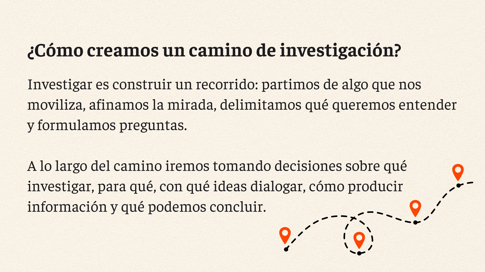
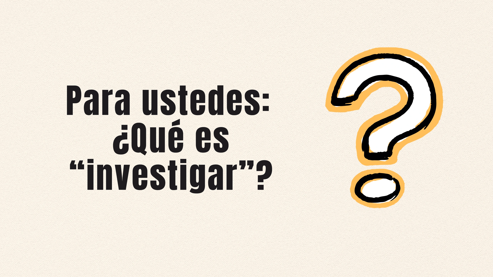

Cargando 0%
Te sugerimos girar el celular y usarlo en posición horizontal.

Te proponemos un recorrido interactivo por este mapa con postas para acompañarlas/os a la próxima edición de la Feria




Espacio para cargar información de la posta...

* Arrastra las 3 aspas de colores para ubicarlas en las ruedas.